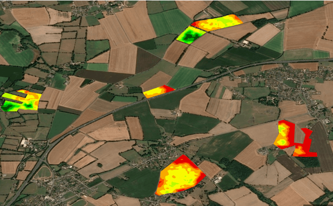
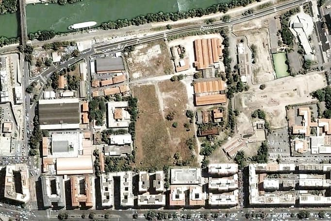
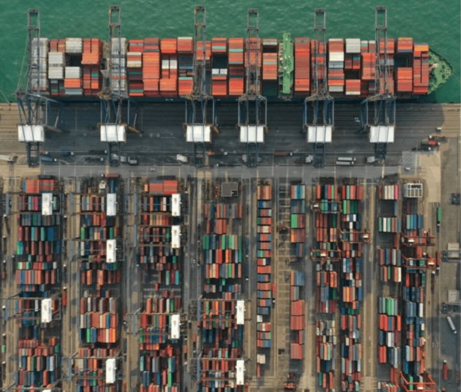
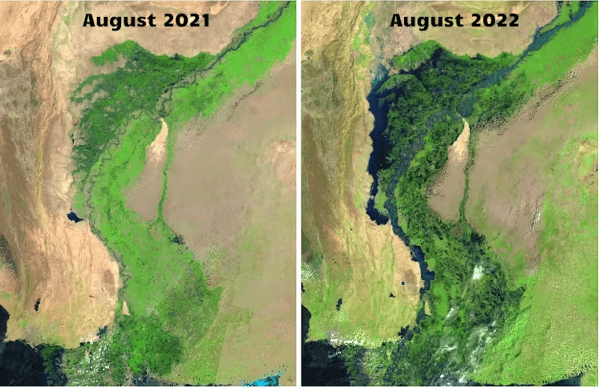
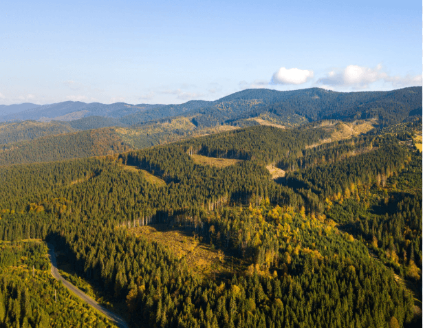
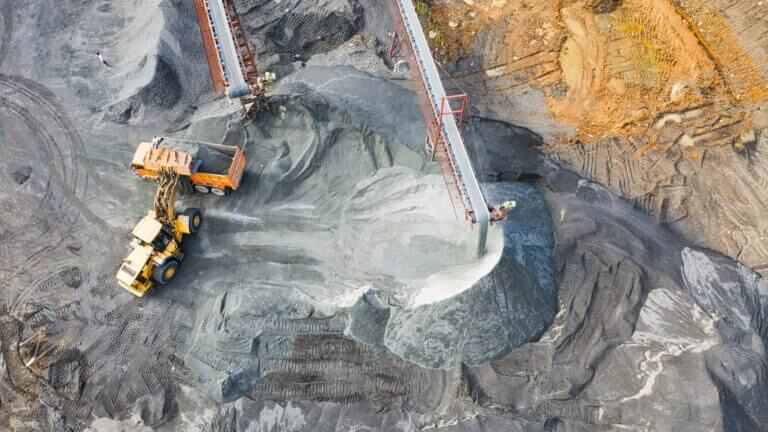

Your eye in
the sky
We offer a web-based geospatial analytics service using AI and remote sensing.
Supported by
Platform
Effortlessly search your satellite images.
Advanced Object Recognition
Use satellite imagery and AI to monitor land use, vegetation, and environmental change.
Powerful Analytics
Extract data and generate reports that support confident decision-making.
Intuitive Map Interface
Select areas of interest and visualise your data on an interactive map.
Flexible Satellite Options
Analyse your own imagery or choose from Skeye's image library.
Field
Solar panels
Reservoir
About Skeye
Insights from above, in plain sight.
Skeye is a geospatial analytics platform that turns satellite imagery into clear, usable insight. Our AI detects and locates objects on the ground, so you can see what matters without needing a remote sensing background.
FieldsStadiumsBridgesSolar panels
Watch
See Skeye in action
Industries
Built for the way you work.



Environmental Monitoring
Detect deforestation and disaster damage, and protect habitats.
Learn More →

Research
Compare satellite imagery and spot what changed
View two dates, layers, or datasets side by side. No GIS expertise needed.
Explore the Tool
BeforeAfter
Drag the slider to compare
FAQ
Questions, answered.
How much does Skeye cost?
Pricing is flexible and based on your project size and data needs. Request a quote and we'll tailor a plan for you.
How do I get started?
Fill in the Get Started form and our team will follow up with next steps.
What makes Skeye different?
An interface that requires no remote sensing, AI, or GIS background. Anyone can explore and act on satellite insight.
How accurate is it?
Our AI models average around 98% accuracy. Results can vary with some imagery, and we'll work with you to improve them.
What objects can Skeye detect?
Fields, stadiums, bridges, pools, airports, solar panels, reservoirs, parking lots, harbours, ships, and vehicles.